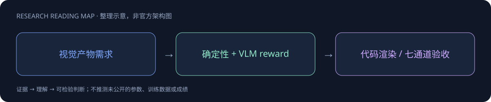

AesCode

一页速览
| 维度 | 当前证据 |
|---|---|
| 发布时间 | 2026-09（确切日期待核实，未计入精确30日表） |
| 类型 | 专项支线 / family · Visual Code |
| 关键事实 1 | 3K SFT；7408 RL prompts |
| 关键事实 2 | 32B：520 RL steps |
| 关键事实 3 | Overall85.89；Style55.99 |
| 检查日期 | 2026-10-13；官方原始资料在同级src/ |
视觉产物需要多维 Verifier，而非只奖励截图审美
基于Qwen3VL8B/32B微调，输出可执行视觉代码。SFT约3K样本、学习率1e-5；RL有7408prompts，32B520steps、8B400steps，GDPO128×8rollout、5e-6，KL与entropy系数.001，prompt/response预算8192。
奖励设计里最有价值的分工
设计图中的可解析结构使用确定性检查，无法轻易程序化的风格由VLM判断；七类评测通道帮助避免单一审美分数掩盖表格/边界错误。Playwright评测禁网络，使页面不依赖临时在线资源，但需要固定浏览器与渲染环境。
| 32B官方自报 | 得分 |
|---|---|
| Overall | 85.89 |
| Rule | 94.33 |
| Table/Chart | 90.37 |
| Boundary | 97.27 |
| Style | 55.99 |
结构分高但Style不足60，说明不能从Overall推导全面设计质量。确定性奖励也可能被绕过：应检测隐藏元素、虚构图表数据、用图片替代需要可编辑代码等reward hacking。
2026-10-15：官方模型卡新增技术报告链接
最新HF卡已明确链接 Tech Report：AesCode 与 官方项目页。arXiv v1提交记录为2026-10-13 17:59:31 UTC，即北京时间10月14日01:59:31。这是报告公开时间，不证明模型权重在同一时间首次发布，故本模型仍不进入精确日期的30天表。
对 Agent Training 的启发
以上是基于已读官方资料的研究判断，不是官方保证，也没有在本机运行模型推理或复现论文成绩。下一步优先补独立验证器、固定任务/版本和完整失败轨迹，避免只保存最好样例。
一手资料与导航
- [S1] HF Model Card
- [S2] Tech Report（PDF，仅链接）
- [S3] 官方项目页
原始下载文件与SHA-256见 抓取记录。报告保留链接，不抓PDF；动态网页响应若只有壳文件，不将其标成完整离线正文。
📊 相关可视化: AesCode 中文Poster